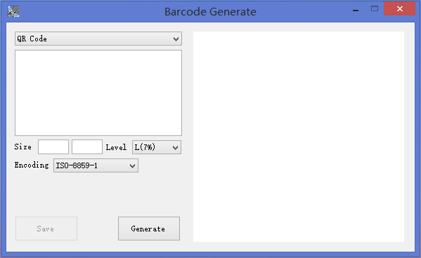
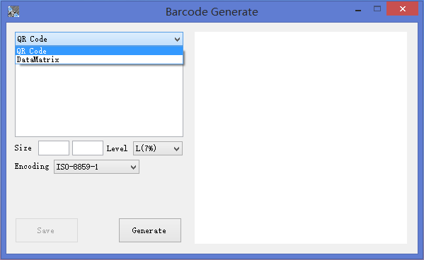
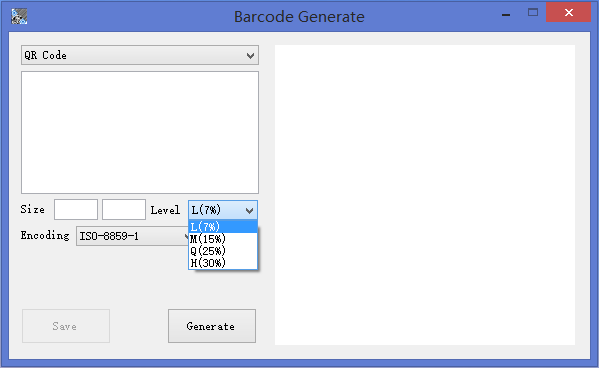
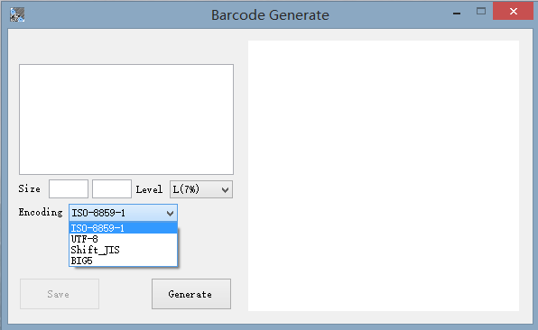
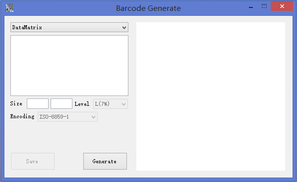
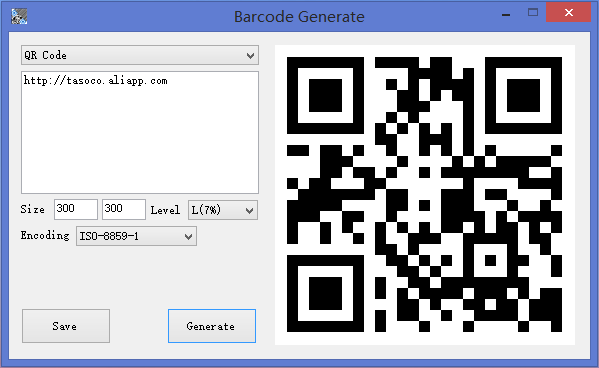
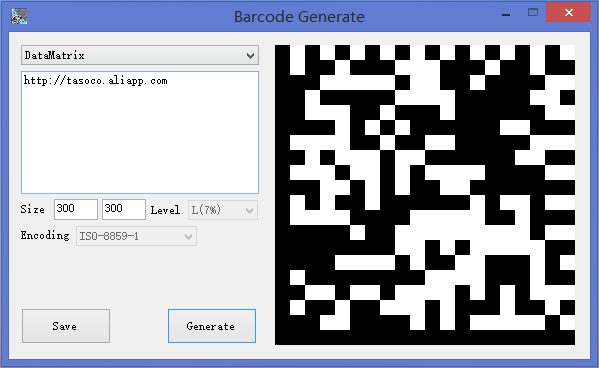

二維碼生成器
如果在使用中出現任何問題,請戳這個告訴我.
雖然現在有超多的在線生成二維碼的工具,但是網絡不好用的時候就不能用那些在線服務了.
感謝ZXing提供生成支持.
需要.Net Framework 4.5支持.
      
1. 生成前需要正確設置編碼,不識別的文字會被變成 ?
2. 以後版本會支持更多格式的QR(例如電話,vCard,SMS等),還有其他的二維碼(例如 DataMatrix)將會被支持.
3. 文本區如果為空點擊生成會出現.Net錯誤.
v1.0 4th Mar 2014
1. 簡單的QR碼生成器.
2. 支持文本格式(其他格式需自行拼接字符串)
3. 自定義生成尺寸.
4. 寬高如果只設置一個會自動填充到另一個.默認是300*300
5. 支持ISO 8859-1\UTF-8\Big5\Shift_JIS編碼.
6. 支持保存到文件(默認是PNG.可以選擇保存成JPG,但是手動需要添加後綴名).
v1.1 11 Nov 2014
1. 增加DataMatrix生成支持.(DataMatrix僅支持ASCII(ISO 8859-1)編碼)
2. 可保存為GIF格式
3. 修復Bug.
BarcodeGen v1.1
微盤